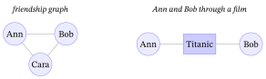
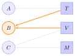
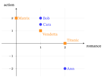
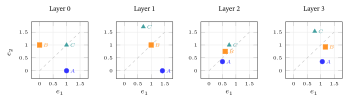
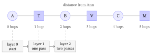
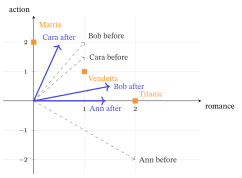

From Graphs to LightGCN
1. What is a graph?
A graph is a collection of things and the connections between them.
- The “things” are called nodes (or vertices).
- The connections are called edges.
Example — a tiny social network. Each person is a node; each friendship is an edge:
Alice —— Bob
| |
Carol —— DaveA graph is a flexible way to represent anything where relationships matter: road maps (cities + roads), molecules (atoms + bonds), the web (pages + links), and — our focus — who interacted with what in a recommendation system.
2. Classes of graphs
Not all graphs are alike. A handful of yes/no properties classify almost any graph, and they decide which model you can use. The ones that matter for us:
| Property | Two cases | What it means | Recommendation graph |
|---|---|---|---|
| Direction | undirected vs. directed | does an edge have a direction (A→B \(\ne\) B→A)? | usually undirected (a watch links user↔︎item both ways) |
| Weights | unweighted vs. weighted | is an edge just present/absent (0/1), or does it carry a number (rating, count)? | often unweighted (implicit 0/1); sometimes weighted by rating |
| Node types | homogeneous vs. heterogeneous | one kind of node, or several? | heterogeneous (two types: users & items) |
| Partition | general vs. bipartite | (a special heterogeneous case) two groups, edges only across | bipartite (§3) |
| Node features | attributed vs. featureless | does each node carry an input feature vector? | featureless — only IDs (this is decisive; §4, §14) |
| Cycles | cyclic vs. acyclic (a DAG) | can you walk in a loop back to the start? | cyclic (user→item→user→… loops freely) |
| Connectivity | connected vs. disconnected | is every node reachable from every other? | usually one big connected component + small islands |
| Edge multiplicity | simple vs. multigraph | at most one edge per pair, or many? | usually simple (collapse repeats) |
| Time | static vs. dynamic / temporal | does the graph change over time? | snapshots are static; real systems are dynamic (sequential models add time) |
Locate our graph in this taxonomy. A collaborative-filtering recommendation graph is undirected, (usually) unweighted, heterogeneous-bipartite, featureless, cyclic, mostly-connected, simple, static. The single most consequential entry is featureless: because nodes carry no input attributes, the embeddings must be learned from scratch — which is exactly why LightGCN can throw away the feature transform (§14).
3. Bipartite graph
A bipartite graph is a graph whose nodes split into two separate groups, where edges only go between the groups — never within a group.
In recommendation the two groups are users and items (movies, say):

- An edge means “this user watched / rated this movie.”
- There is no edge between two users, and no edge between two movies.
That “edges only cross between the two sides” property is what makes it bipartite (bi = two parts). Ann is not directly connected to Bob; a movie is not connected to another movie. Any relationship between two users must be inferred by walking across the movie side and back — which, as we will see, is exactly what graph convolution does. (This is also why relating two same-type nodes needs an even number of hops — §7.)
4. The graph in the GCN paper vs. the recommendation graph
This distinction explains everything about why LightGCN looks the way it does, so it is worth stating explicitly.
The original GCN (Kipf & Welling, 2017) was designed for semi-supervised node classification on a single, large, homogeneous, attributed graph — the canonical examples are citation networks (Cora, Citeseer, Pubmed): nodes are papers, edges are “paper A cites paper B,” and each node carries a feature vector \(x_i\) (e.g. a bag-of-words of the paper’s text). A few nodes are labeled with a class (the paper’s topic), and the task is to predict the class of the unlabeled nodes. The input is the feature matrix \(X\); the GCN transforms those features layer by layer with a weight matrix \(W\) and a nonlinearity \(\sigma\).
The recommendation graph is different on almost every axis from §2:
| Axis | GCN paper (citation net) | Recommendation graph |
|---|---|---|
| Node types | homogeneous (papers only) | heterogeneous-bipartite (users + items) |
| Node features | attributed (\(x_i\) = word vector) | featureless (only an ID) |
| Edge meaning | citation | interaction (watch / click / rating) |
| Task | node classification (predict a label) | link prediction / ranking (top-\(K\) retrieval) |
| Supervision | a few labeled nodes | observed interactions (positives) only |
| What is the input? | features \(X\) (given) | embeddings \(E^{(0)}\) (learned from scratch) |
| Output / metric | accuracy on held-out node labels | Recall@\(K\) / NDCG@\(K\) on held-out items |
Why the differences matter (the punchline that returns in §14):
- Featureless ⟹ the weight matrix \(W\) has nothing meaningful to transform. In the citation graph, \(W\) usefully reshapes real word-features. With only free ID embeddings, multiplying by \(W\) just re-parameterizes a vector you are already free to learn — so it adds optimization difficulty, not capacity. LightGCN drops it.
- Bipartite ⟹ same-type relationships need 2 hops (user→item→user), which sets how many layers you need.
- Ranking, not classification ⟹ a different loss — BPR / softmax over items rather than cross-entropy over a fixed label set (§15; full loss zoo in the Losses & Regularizers chapter).
So “GCN” and “graph convolution for recommendation” inherit the same operation but serve graphs of fundamentally different class (§2) — and that class difference is the root cause of the LightGCN simplification.
5. Adjacency matrix (and interaction matrix, and degree)
We need to feed a graph to a computer. A clean way to write down connections is a table of 0s and 1s — the adjacency matrix.
Rule: put a 1 in row \(X\), column \(Y\) if there is an edge between \(X\) and \(Y\); otherwise 0.
Suppose 3 users (A, B, C) and 3 movies (Titanic = T, Avatar = V, Matrix = M):
| T | V | M | |
|---|---|---|---|
| A | 1 | 0 | 0 |
| B | 1 | 1 | 0 |
| C | 0 | 1 | 1 |
This reads: A watched Titanic; B watched Titanic and Avatar; C watched Avatar and Matrix. This users-×-movies table is the interaction matrix \(R\).
The full adjacency matrix of the whole graph (all nodes on both axes — users and movies) is built from \(R\):
\[ A = \begin{bmatrix} 0 & R \\ R^\top & 0 \end{bmatrix} \]
Why this shape?
- Top-left block (user → user) is all 0 — no user–user edges (bipartite!).
- Bottom-right block (movie → movie) is all 0 — no movie–movie edges.
- Top-right is \(R\) (user → movie edges); bottom-left is \(R^\top\), the same edges read the other direction (movie → user).
So the adjacency matrix is simply the graph’s connections written as a square grid of 0s and 1s. (For a weighted graph the 1s become weights; for a directed graph \(A\) is no longer symmetric — see §2.)
Degree
The degree of a node = how many edges it has (how many neighbors).
- Ann’s degree = 1 (only Titanic).
- Bob’s degree = 2 (Titanic + Avatar).
We collect degrees on the diagonal of a degree matrix \(D\). It is used for “fair averaging” later: a blockbuster watched by a million people should not drown out everything else (the popularity effect we make concrete in §13).
6. Embeddings (and the dot product)
A computer cannot do math on the word “Ann” or “Titanic.” So we represent each node as a list of numbers — a vector. That vector is its embedding.
For example, with embedding size \(d = 4\):
Ann → [ 0.2, -1.1, 0.7, 0.0 ]
Titanic → [-0.3, 0.9, 0.4, 1.2 ]Key facts about embeddings:
- It is a point in space. Each node becomes a point in a \(d\)-dimensional space. “Similar” nodes should end up close together.
- They start random and are learned. Initially the numbers are random; during training the model nudges them so users land near the movies they like. After training they encode taste / genre / popularity — implicitly, with no labels.
- They are the model’s parameters. In pure collaborative filtering there are no other input features (§4). The embeddings are the only thing learned.
How we use them. To guess whether Ann likes Matrix, take the dot product (Linear-Algebra primer §4) of their embeddings:
\[ \hat{y} = e_{\text{Ann}} \cdot e_{\text{Matrix}} = \sum_k e_{\text{Ann}}[k]\times e_{\text{Matrix}}[k] \]
A big number → likely a good recommendation; small / negative → not. (The dot product is large when two vectors point the same way, i.e. are “aligned.”)
We stack everybody’s embedding into one big matrix \(E\): one row per node, \(d\) columns. With \(N\) total nodes, \(E \in \mathbb{R}^{N \times d}\).
7. What does “graph convolution” actually do?
The core intuition, in one sentence:
A node should be described by its neighbors. (“You are the company you keep.”)
If we know little about Ann, we learn a lot from the movies she watched. And we learn about a movie from who watched it. Graph convolution makes this mechanical:
One round of graph convolution = every node replaces its embedding with the (normalized) average of its neighbors’ embeddings.
- Ann’s new vector = average of the vectors of the movies she watched.
- Titanic’s new vector = average of the vectors of the users who watched it.

“Graph convolution” vs. “GCN” — operation vs. model. These are not the same thing, the way a convolution is not the same as a CNN:
The operation The model Images a convolution (slide a filter over pixels) a CNN (many conv layers + nonlinearities + classifier) Graphs a graph convolution (aggregate each node’s neighbors, once) a GCN (many graph-conv layers stacked into a trainable network) Graph convolution is the single operation — one matrix multiply by the normalized adjacency, \(E^{(k+1)} = D^{-1/2} A\, D^{-1/2} E^{(k)}\). A GCN is the whole model built by stacking several such layers (plus, in vanilla GCN, weight matrices and ReLU; in LightGCN, nothing extra + a layer-combination + a prediction head + a loss). Graph convolution is the ingredient; the GCN is the dish. LightGCN, NGCF, GraphSAGE, GAT are all different models built from different graph-convolution-style operations. (People often say “GCN” loosely for either — but precisely: operation vs. architecture.)
Crucially, a node does not use its own embedding in its update (in LightGCN there are no self-loops). A node only ever “sees itself” by going out to a neighbor and back — which takes two hops.
Stacking layers = looking further away
- 1 layer: Ann ← her movies (1 hop).
- 2 layers: Ann ← her movies ← the other users who watched those movies (2 hops).
- 3 layers: 3 hops — those users’ other movies, so Ann can be matched to a movie she has never seen.
This multi-hop reach is the whole point: it discovers “users like you also liked…” purely from graph structure.

Layer vs. hop — a foundational distinction
These two words are easy to conflate. They describe different things:
A layer = one application of the graph-convolution operation to all nodes (one stage of computation in the model).
A hop = one step along an edge in the graph (the distance from a node to a directly-connected neighbor).
- 0 hops from A = A itself; 1 hop = A’s direct neighbors (movies A watched); 2 hops = neighbors-of-neighbors (other users who watched those movies); 3 hops = those users’ other movies.
| Layer | Hop | |
|---|---|---|
| What it is | a computation step in the model | a step along an edge in the graph |
| Belongs to | the model / architecture | the graph structure |
| Do you choose it? | yes — a hyperparameter \(K\) | no — fixed by the graph |
The key link: each layer moves information exactly one hop, so
after \(K\) layers, every node’s embedding has absorbed information from everything within \(K\) hops.
This is exactly why the worked example below behaves as it does: layer 2 links user A to user B (B is 2 hops from A: A → Titanic → B), and layer 3 makes A recommendable to Avatar (Avatar is 3 hops from A: A → Titanic → B → Avatar). One layer = one hop of reach. (And because each layer adds a hop, too many layers let every node reach every other node and all embeddings blur together — over-smoothing, §12.)
The normalization piece
We don’t want a blockbuster to dominate, nor an obscure film to vanish. So instead of a plain average we weight each neighbor using the degrees:
\[ \text{weight of edge between } u \text{ and } i = \frac{1}{\sqrt{\deg(u)}\,\sqrt{\deg(i)}} \]
This is symmetric normalization. A simpler choice, \(D^{-1}A\), gives a plain neighbour average (each neighbour weighted \(1/\deg\)), but it is asymmetric: a high-degree node discounts each neighbour heavily while a degree-1 node does not. The symmetric \(D^{-1/2}AD^{-1/2}\) splits the discount across both endpoints, so the edge weight depends on the pair, not on either node alone. In matrix form, the whole “average over neighbors with this weighting,” done for all nodes at once, is:
\[ E^{(k+1)} = D^{-1/2}\, A\, D^{-1/2}\; E^{(k)} \]
Do not be intimidated — this is exactly “every node = weighted average of its neighbors,” written compactly with the adjacency matrix \(A\) and degree matrix \(D\) — a matrix–vector product that mixes each node’s vector with its neighbours’ (Linear-Algebra primer §3). (§13 shows numerically how this weighting tames blockbusters.)
Per component (reading \(D^{-1/2}AD^{-1/2}\) as it acts on \(E^{(k)}\)):
- \(A\) — the adjacency matrix; multiplying by it sums each node’s neighbours’ vectors (row \(u\) of \(AE^{(k)}\) adds up the embeddings of every item \(u\) watched).
- the two \(D^{-1/2}\) — the degree normalization, split symmetrically. The right \(D^{-1/2}\) shrinks each neighbour’s contribution by \(\sqrt{\deg}\) (a blockbuster everyone watched is down-weighted); the left \(D^{-1/2}\) shrinks the receiving node’s total by \(\sqrt{\deg}\) (a user who watched everything doesn’t get an oversized vector). The square root is what splits the normalization into two halves — edge weight \(\tfrac1{\sqrt{\deg u}}\cdot\tfrac1{\sqrt{\deg i}}\) — so it is symmetric in the two endpoints, neither one dominating.
8. The worked example — setup
We now push real numbers through the rule. Everything is small enough to check by hand.
The graph (3 users, 3 movies):
- Users: A, B, C
- Movies: T (Titanic), V (Avatar), M (Matrix)
- Edges: A–T; B–T, B–V; C–V, C–M
Degrees:
| Node | Neighbors | Degree |
|---|---|---|
| A | T | 1 |
| B | T, V | 2 |
| C | V, M | 2 |
| T | A, B | 2 |
| V | B, C | 2 |
| M | C | 1 |
Starting embeddings (\(d = 2\), easy round numbers):
| Node | \(e^{(0)}\) |
|---|---|
| A | [1, 0] |
| B | [0, 1] |
| C | [1, 1] |
| T | [2, 0] |
| V | [0, 2] |
| M | [1, 1] |
The rule. For each node, new embedding = weighted sum of its neighbors’ embeddings, weight \(w = \dfrac{1}{\sqrt{\deg(\text{me})}\,\sqrt{\deg(\text{neighbor})}}\).
Useful constants (these never change — they depend only on the fixed degrees):
\[ \tfrac{1}{\sqrt{2}} \approx 0.707, \qquad \tfrac{1}{\sqrt{2}\sqrt{2}} = \tfrac{1}{2} = 0.5. \]
9. Propagation step 1 (→ 1 hop)
User A — neighbors {T}. \(\deg(A)=1, \deg(T)=2 \Rightarrow w = 0.707\): \[ e_A^{(1)} = 0.707 \times [2,0] = [1.414,\; 0] \]
User B — {T, V}, both weights \(0.5\): \[ e_B^{(1)} = 0.5\,[2,0] + 0.5\,[0,2] = [1,\;1] \]
User C — {V, M}, weights \(0.5\) and \(0.707\): \[ e_C^{(1)} = 0.5\,[0,2] + 0.707\,[1,1] = [0.707,\;1.707] \]
Movie T — {A, B}, weights \(0.707\) and \(0.5\): \[ e_T^{(1)} = 0.707\,[1,0] + 0.5\,[0,1] = [0.707,\;0.5] \]
Movie V — {B, C}, both \(0.5\): \[ e_V^{(1)} = 0.5\,[0,1] + 0.5\,[1,1] = [0.5,\;1.0] \]
Movie M — {C}, weight \(0.707\): \[ e_M^{(1)} = 0.707\,[1,1] = [0.707,\;0.707] \]
Before vs. after layer 1:
| Node | \(e^{(0)}\) | \(e^{(1)}\) |
|---|---|---|
| A | [1, 0] | [1.414, 0] |
| B | [0, 1] | [1, 1] |
| C | [1, 1] | [0.707, 1.707] |
| T | [2, 0] | [0.707, 0.5] |
| V | [0, 2] | [0.5, 1.0] |
| M | [1, 1] | [0.707, 0.707] |
Reading the meaning. A’s new embedding [1.414, 0] points the same direction as Titanic’s old embedding [2, 0]. A watched only Titanic, so A was pulled toward Titanic’s representation. The model now “knows” A’s taste resembles Titanic — purely from the edge.
Check that shared taste emerges. Dot products between users:
- Before — A·C \(= 1\), B·C \(= 1\) (tie).
- After — A·C \(= (1.414)(0.707) + (0)(1.707) = 1.0\); B·C \(= (1)(0.707) + (1)(1.707) = 2.414\).
After one hop, B and C look much more similar (2.414) than A and C (1.0) — correct, since B and C share Avatar while A and C share nothing. The convolution discovered the overlap on its own.
10. Propagation step 2 (→ 2 hops)
Apply the same rule again, now using the \(e^{(1)}\) values as input.
Common confusion — read this carefully. To update User A we use A’s neighbor’s value, i.e. Titanic’s \(e^{(1)} = [0.707, 0.5]\) — not A’s own \(e^{(1)} = [1.414, 0]\). A node never uses itself in its own update (no self-loops). The number
[0.707, 0.5]below is Titanic’s vector.
User A — {T}: \[ e_A^{(2)} = 0.707\,\underbrace{[0.707, 0.5]}_{e_T^{(1)}} = [0.5,\; 0.354] \]
User B — {T, V}: \[ e_B^{(2)} = 0.5\,[0.707,0.5] + 0.5\,[0.5,1.0] = [0.604,\; 0.75] \]
User C — {V, M}: \[ e_C^{(2)} = 0.5\,[0.5,1.0] + 0.707\,[0.707,0.707] = [0.75,\; 1.0] \]
Movie T — {A, B}: \[ e_T^{(2)} = 0.707\,[1.414,0] + 0.5\,[1,1] = [1.5,\; 0.5] \]
Movie V — {B, C}: \[ e_V^{(2)} = 0.5\,[1,1] + 0.5\,[0.707,1.707] = [0.854,\; 1.354] \]
Movie M — {C}: \[ e_M^{(2)} = 0.707\,[0.707,1.707] = [0.5,\; 1.207] \]
| Node | \(e^{(2)}\) |
|---|---|
| A | [0.5, 0.354] |
| B | [0.604, 0.75] |
| C | [0.75, 1.0] |
| T | [1.5, 0.5] |
| V | [0.854, 1.354] |
| M | [0.5, 1.207] |
The payoff: A now contains B
A’s only neighbor is T, and T’s layer-1 value was itself built from A and B: \[ e_T^{(1)} = 0.707\,e_A^{(0)} + 0.5\,e_B^{(0)}. \] Therefore: \[ e_A^{(2)} = 0.707\,e_T^{(1)} = 0.707\big(0.707\,e_A^{(0)} + 0.5\,e_B^{(0)}\big) = \underbrace{0.5\,e_A^{(0)}}_{\text{A's own}} + \underbrace{0.354\,e_B^{(0)}}_{\textbf{B leaked in!}} \]
B’s original embedding now appears inside A, even though A and B have no direct edge. The signal traveled the 2-hop path A → T → B. The graph discovered that A and B are related because both watched Titanic.
Direction convergence (cosine similarity):
| \(e^{(0)}\) | \(e^{(1)}\) | \(e^{(2)}\) | |
|---|---|---|---|
| cos(A, B) | 0.0 | 0.707 | 0.962 |
From orthogonal (unrelated) to almost perfectly aligned, in two hops.
11. Propagation step 3 (→ 3 hops)
Now the question that matters for recommendation: can A be matched to a movie A never watched? A watched only Titanic; Avatar (V) is a candidate.
Using the \(e^{(2)}\) table as input:
User A — {T}: \(\;e_A^{(3)} = 0.707\,[1.5,0.5] = [1.061,\; 0.354]\)
User B — {T, V}: \(\;0.5\,[1.5,0.5] + 0.5\,[0.854,1.354] = [1.177,\; 0.927]\)
User C — {V, M}: \(\;0.5\,[0.854,1.354] + 0.707\,[0.5,1.207] = [0.780,\; 1.530]\)
Movie T — {A, B}: \(\;0.707\,[0.5,0.354] + 0.5\,[0.604,0.75] = [0.655,\; 0.625]\)
Movie V — {B, C}: \(\;0.5\,[0.604,0.75] + 0.5\,[0.75,1.0] = [0.677,\; 0.875]\)
Movie M — {C}: \(\;0.707\,[0.75,1.0] = [0.530,\; 0.707]\)
A becomes recommendable to Avatar
The prediction score is the dot product \(e_A \cdot e_V\). Watch A’s affinity for Avatar — a movie A never touched — grow layer by layer:
| Layer | \(e_A \cdot e_V\) | Note |
|---|---|---|
| \(e^{(0)}\) | \([1,0]\cdot[0,2] = 0\) | totally unrelated at start |
| \(e^{(1)}\) | \(0.707\) | — |
| \(e^{(2)}\) | \(0.905\) | — |
| \(e^{(3)}\) | \([1.061,0.354]\cdot[0.677,0.875] = \mathbf{1.027}\) | strong match |
The score climbed from 0 → 1.027, driven by a specific chain through the graph:
\[ \underbrace{\text{A}}_{\text{user}} \to \underbrace{\text{Titanic}}_{\text{A watched it}} \to \underbrace{\text{B}}_{\text{also watched Titanic}} \to \underbrace{\text{Avatar}}_{\text{B watched it}} \]
That is the classic recommendation logic — “You and B both liked Titanic; B also liked Avatar; so here’s Avatar” — and it fell out automatically from three rounds of “average your neighbors.” Nobody coded that rule.
It took exactly 3 hops because the path A–T–B–V is 3 edges long. In general, \(K\) layers let signal reach \(K\) hops.
12. Why not stack layers forever? Over-smoothing
You cannot keep stacking layers. With too many hops, every node ends up averaging in every other node, and all embeddings drift toward the same blurry point — they stop being distinguishable. This is over-smoothing. In practice 2–4 layers is the sweet spot.
Over-smoothing as a number
This is not just a warning — we can watch it happen in our own running example. The sharpest way to measure “are two nodes still distinguishable?” is the cosine similarity of their embeddings (the angle between them; \(1 =\) same direction, \(0 =\) unrelated — Linear-Algebra primer §4). Over-smoothing means every cosine creeps toward 1. Track the three users as we keep applying the rule:
| Layer \(k\) | cos(A, B) | cos(A, C) | cos(B, C) |
|---|---|---|---|
| 0 (start) | 0.000 | 0.707 | 0.707 |
| 2 | 0.962 | 0.952 | 0.999 |
| 4 | 0.997 | 0.987 | 0.997 |
| 6 | 0.999 | 0.995 | 0.998 |
(The first two rows are the very numbers from §10 — cos(A,B) went \(0 \to 0.962\) over two hops. We read even layers only because this tiny graph is bipartite: a single hop flips users to the movie side and back, so odd/even layers alternate and the even-layer trend is the clean one.) By layer 6, A, B and C all point within \(\approx 6^\circ\) of each other (\(\cos^{-1} 0.995 \approx 6^\circ\)): the model can no longer tell the three users apart, so it can no longer personalize. That is over-smoothing — the embeddings have collapsed onto one direction.
The geometric picture of this collapse is even more direct: plot the three user vectors in the 2-D embedding space and watch them drift toward a common direction as layers stack.


This is exactly why LightGCN uses a layer-combination trick: instead of using only the last layer, it averages the embeddings from all layers:
\[ e_u = \sum_{k=0}^{K} \alpha_k\, e_u^{(k)}, \qquad \alpha_k = \tfrac{1}{K+1}\ \text{(usually)}. \]
This keeps the sharp, identity-preserving early layers and the long-range signal from later layers — getting the recommendation benefit without letting over-smoothing wash everything out. It also serves as a built-in residual connection and replaces the need for self-loops (the \(k=0\) term is the node’s own embedding).
By the numbers (user \(A\), \(K=2\), \(\alpha_k=\tfrac13\)). Combine \(A\)’s own layers \(0,1,2\): \[ e_A \;=\; \tfrac13\big([1,0] + [1.414,0] + [0.5,0.354]\big) \;=\; [0.971,\; 0.118]. \] A’s pure layer-2 vector \([0.5,0.354]\) had already swung \(\approx 35^\circ\) off A’s original \([1,0]\) identity (cosine \(0.82\)); the layer-combined vector sits just \(\approx 7^\circ\) off it (cosine \(0.99\)). Layer combination keeps the sharp, identity-preserving early layers while still carrying the 2-hop signal — the over-smoothing cure, now as a number.
13. Blockbuster vs. long-tail: the popularity effect
Real interaction graphs are wildly uneven in degree. A blockbuster is watched by millions (huge degree); most of the catalog is long-tail — niche items with a handful of interactions (tiny degree). This lopsidedness — a power-law degree distribution (a few items get almost all the interactions; a long tail get almost none) — shapes both training and recommendations. Let us make it concrete.
A toy popularity graph. One blockbuster P watched by 1000 users (\(\deg(P)=1000\)); one niche film Q watched by a single user (\(\deg(Q)=1\)). Consider a user U who watched both P and Q, so \(\deg(U)=2\).
Effect 1 — normalization protects U from the blockbuster (good)
With the symmetric weight \(w = \tfrac{1}{\sqrt{\deg(\text{me})}\sqrt{\deg(\text{nbr})}}\), the per-edge influence on U’s embedding is:
\[ w_{U\to P} = \frac{1}{\sqrt{2}\,\sqrt{1000}} \approx \frac{1}{44.7} \approx 0.022, \qquad w_{U\to Q} = \frac{1}{\sqrt{2}\,\sqrt{1}} \approx 0.707 . \]
So the niche film Q pulls U’s representation much harder than the blockbuster P. How much harder is exact, and it does not depend on the rounding above — U’s own \(\tfrac{1}{\sqrt{2}}\) cancels in the ratio: \[ \frac{w_{U\to Q}}{w_{U\to P}} = \frac{1/(\sqrt{2}\,\sqrt{1})}{1/(\sqrt{2}\,\sqrt{1000})} = \frac{\sqrt{1000}}{\sqrt{1}} = \sqrt{1000} \approx 31.6 . \] The pull ratio is just \(\sqrt{\deg(P)/\deg(Q)}\) — the square root of the degree ratio, about 32× here (a hair under, since \(\sqrt{1000}=31.6\), not 32). This is the point of the \(1/\sqrt{\deg}\) term: a popular item is connected to everyone, so it is a weak signal of any individual’s taste, and normalization rightly discounts it. Without normalization (plain neighbor sum), P and Q would count equally per edge, and high-degree nodes would swamp every embedding — collapsing the space toward the popular region.
Effect 2 — the blockbuster drifts to the “average user” (popularity bias)
Now look at the items themselves. Writing \(\mathcal{N}(P)\) for the set of users who watched P (its neighbour-set in the graph), P aggregates from its 1000 users:
\[ e_P \;=\; \sum_{u \in \mathcal{N}(P)} \frac{1}{\sqrt{1000}\,\sqrt{\deg(u)}}\, e_u \;\approx\; (\text{scale}) \times \overline{e_{\text{user}}} , \]
a scaled average over a huge, diverse crowd → P lands near the population centroid (the “generic user” direction). A vector near the centroid has a positive dot product with almost everyone, so P scores highly for nearly all users and gets over-recommended — regardless of individual taste. Q, by contrast, aggregates from one user, so \(e_Q \approx (\text{scale})\times e_U\): it points at U specifically and scores well only for U-like users.
Effect 3 — the long tail is starved during training
Embeddings are learned from gradients, and gradients come from interactions. P appears in 1000 training pairs → its embedding is updated 1000× per epoch and is sharply learned. Q appears in one → it gets a single nudge, stays close to its random initialization, and is poorly learned. So the long tail suffers twice: under-trained representations and low scores from Effect 2.
Why this matters (and what fixes it)
| Symptom | Consequence | Mitigation |
|---|---|---|
| Popularity bias (Effect 2) | recommendations dominated by blockbusters; low coverage / diversity | re-ranking, popularity de-biasing, the uniformity term of contrastive SSL (SSL & Contrastive Learning) |
| Long-tail starvation (Effect 3) | niche items rarely surfaced; poor tail-Recall | self-supervised auxiliary signal (SGL/SimGCL), LLM semantic features (SSL & Contrastive Learning), dedicated cold-start handling |
Evaluation caveat. Because of these effects, Recall@\(K\) / NDCG@\(K\) alone can be gamed by popularity. A trustworthy evaluation also reports coverage, Gini / long-tail share, and tail-Recall, and ideally a popularity-debiased metric. This is a recurring reviewer ask, and a core motivation for the SSL methods in SSL & Contrastive Learning and the spectral baselines in The Spectral / Graph-Filter View.
14. GCN → NGCF → LightGCN
Vanilla GCN (Kipf & Welling, 2017) was built for node classification on attributed graphs (e.g. citation networks; see §4) where nodes carry rich input features. One layer:
\[ E^{(k+1)} = \sigma\!\Big( \tilde{D}^{-1/2}\tilde{A}\tilde{D}^{-1/2}\, E^{(k)}\, W^{(k)} \Big) \]
with self-loops \(\tilde{A} = A + I\), a learnable weight matrix \(W^{(k)}\) (feature transformation), and a nonlinearity \(\sigma\) (ReLU).
NGCF (Wang et al., SIGIR 2019) ported this to recommendation, keeping \(W\), \(\sigma\), and an extra interaction term \((e_u \odot e_i)\) in the message — an element-wise product that lets the model weight feature-by-feature agreement between a user and an item. It worked but was complex and hard to train. On a featureless graph where \(e_u\) and \(e_i\) are free ID vectors with no semantic meaning attached to individual dimensions, this term adds optimization complexity without a commensurate signal benefit, which is why dropping it helps.
LightGCN (He et al., SIGIR 2020) ran the ablation and found that, for recommendation, \(W\) and \(\sigma\) hurt performance. The reason is fundamental and is exactly the §4 graph-class difference:
In collaborative filtering, nodes have no input features. The embeddings \(E^{(0)}\) are the only thing learned — they are the parameters. Repeatedly multiplying free ID embeddings by \(W\) and applying ReLU adds no useful capacity, only optimization difficulty and overfitting.
So LightGCN strips the GCN to its essential operation — normalized neighbor aggregation — and adds layer combination. Its propagation is precisely the rule we used by hand:
\[ E^{(k+1)} = D^{-1/2}\, A\, D^{-1/2}\, E^{(k)} \qquad\text{(no } W,\ \text{no } \sigma,\ \text{no self-loop).} \]
Training uses BPR loss (rank observed pairs above sampled negatives; §15 states the objective, and the Losses & Regularizers chapter has the full zoo), and the only learnable parameters are \(E^{(0)}\).
Side-by-side
| Component | GCN | NGCF | LightGCN |
|---|---|---|---|
| Neighbor aggregation | yes | yes | yes |
| Symmetric normalization | yes | yes | yes |
| Self-loop | yes (\(A+I\)) | yes | no (replaced by layer combo) |
| Feature transform \(W\) | yes | yes | removed |
| Nonlinearity \(\sigma\) | yes | yes | removed |
| Self-interaction term | no | yes | removed |
| Layer combination | last layer | last layer | weighted sum of all |
| Learnable params | \(E^{(0)},\{W^{(k)}\}\) | \(E^{(0)},\{W^{(k)}\}\) | only \(E^{(0)}\) |
One-sentence takeaway. GCN transforms (\(W\)) and nonlinearly combines (\(\sigma\)) node features because it was built for feature-rich graphs (§4); recommendation graphs have no node features — the embeddings are the parameters — so LightGCN removes \(W\) and \(\sigma\) entirely, keeping only normalized neighbor aggregation plus a multi-layer sum, which is both more accurate and far easier to train.

Known limitation — LightGCN is transductive.1 The only parameters are the base ID embeddings \(E^{(0)}\) — one learned vector per user and per item seen during training. A brand-new user or item that first appears at serving time has no row in \(E^{(0)}\), hence no vector to propagate, so pure graph CF cannot score a cold-start node at all (the cold-start problem of Traditional RecSys §7, now in graph form). This is exactly a gap an LLM can fill — a semantic vector computed from a new item’s text gives it a usable embedding with zero interactions — which is part of why LLM augmentation (§17) exists.
The arrow doesn’t stop at LightGCN
LightGCN’s lesson — strip everything the featureless graph doesn’t need — did not end in 2020. UltraGCN (Mao et al., CIKM 2021) pushes the same logic one step further: rather than run \(K\) message-passing layers, it approximates the infinite-layer limit in a single step with a constraint loss, and adds an explicit item-to-item term — dropping iterative propagation almost entirely while matching or beating LightGCN. The simplification arrow keeps going.
And, for honesty as much as currency: by the mid-2020s, training-free graph filters (GF-CF, Turbo-CF) and a well-tuned plain MF/BPR are competitive with LightGCN on the standard benchmarks. LightGCN’s enduring value is that it is the clearest strong default — easy to reason about, cheap to train, trivial to serve — not that it is the uncontested state of the art. The next chapter explains why a closed-form filter can rival a trained GNN (The Spectral / Graph-Filter View); the one after shows where graph CF still has real headroom on sparse, long-tail data (SSL & Contrastive Learning).
15. The LightGCN objective (BPR + L2 — full treatment in Losses & Regularizers)
So far we built representations. To train them we need an objective to minimize: a task loss (fit/rank the interactions) plus a regularizer (keep the model simple). For LightGCN specifically, that objective is
\[ \mathcal{L}_{\text{LightGCN}} \;=\; \underbrace{\mathcal{L}_{\text{BPR}}}_{\text{pairwise ranking}} \;+\; \underbrace{\lambda\,\lVert E^{(0)}\rVert^2}_{\text{L2 on the base embeddings}}, \]
i.e. BPR ranking loss + L2 weight decay — and L2 hits only the base embeddings \(E^{(0)}\) (the sole parameters; the propagated layers have none). The two or three knobs that dominate accuracy are the learning rate and the L2 weight \(\lambda\).
The full treatment lives in the Losses & Regularizers chapter — read it for: what a loss/regularizer is and why each is named what it is; the pointwise / pairwise / listwise distinction; BPR worked digit-by-digit by hand (and why “Bayesian Personalized Ranking” — its L2 term is the −log-prior of a MAP derivation); BCE, sampled-softmax, DirectAU alignment+uniformity; and the regularizer zoo (L2, edge dropout, early stopping, and the contrastive-SSL term that doubles as a regularizer). SSL & Contrastive Learning and The Spectral / Graph-Filter View build their respective objectives on top of the BPR + L2 baseline stated here.
In practice. At real scale you never build a dense \(N \times N\) adjacency \(A\) — store the interaction pairs as a sparse matrix and propagate via a sparse matrix–vector product (memory drops from \(O(N^2)\) to \(O(|\mathcal{E}|)\)). Train on mini-batches of \((u, i^+, i^-)\) triples using the BPR loss, not the full graph at once. For graphs that do not fit in GPU memory, borrow the GraphSAGE trick (Hamilton et al., 2017): instead of aggregating every neighbour, sample a fixed neighbourhood size per node per layer — propagation cost becomes constant per node. Concretely, GraphSAGE randomly samples a fixed-size subset of each node’s neighbours per layer instead of aggregating all of them, so the per-node propagation cost stays roughly constant regardless of the node’s degree — and this is precisely what makes message-passing tractable on graphs with billions of edges. In practice you rarely implement any of this from scratch: RecBole wires up LightGCN end-to-end (sparse ops, BPR, evaluation), and PyTorch Geometric (PyG) or DGL give you the sparse message-passing primitives if you need to build a custom variant. (
recbole.io; PyG:pytorch-geometric.readthedocs.io; DGL:dgl.ai.) The full training loop (negative sampling, the BPR step worked by hand) and serving (top-\(K\) inference, ANN, the retrieval → ranking funnel) are built in Training and Serving a Recommender.
At serving time, a graph model costs exactly what MF costs. This is the fact that makes LightGCN deployable. Once trained, you precompute the final layer-combined embeddings once (run the propagation, store \(e_u\) and \(e_i\)); from then on scoring a (user, item) pair is a plain dot product, identical to matrix factorization — the graph is gone at serving time, and top-\(K\) retrieval is a single ANN lookup (Training and Serving). The whole served index is just \(N \times d\) floats: e.g. \(10^6\) users-plus-items at \(d=64\) in 4-byte floats is \(10^6 \times 64 \times 4\) bytes, about 256 MB — independent of how many edges the training graph had.
Which graph-collaborative model should you actually reach for? The mechanics live in this chapter and its two siblings; the choice comes down to goal and cost:
| Your goal | Reach for | Cost |
|---|---|---|
| a strong, simple baseline | plain MF / BPR | cheapest; often within about a point of LightGCN |
| the default graph-CF model | LightGCN (2–3 layers) | one sparse matmul per layer; serves like MF |
| LightGCN-level accuracy, almost no training | UltraGCN, or training-free GF-CF / Turbo-CF | one-shot or closed-form (The Spectral / Graph-Filter View) |
| robustness on sparse, long-tail data | SimGCL / LightGCL | adds a self-supervised term; modest extra training cost (SSL & Contrastive Learning) |
16. Exercises
Ten by-hand problems, all on the running 3-user / 3-movie graph (users \(A,B,C\); movies \(T\) = Titanic, \(V\) = Avatar, \(M\) = Matrix; edges \(A\!-\!T\), \(B\!-\!T\), \(B\!-\!V\), \(C\!-\!V\), \(C\!-\!M\); degrees \(A{=}1,B{=}2,C{=}2,T{=}2,V{=}2,M{=}1\)) and its starting embeddings (\(e_A^{(0)}{=}[1,0]\), \(e_B^{(0)}{=}[0,1]\), \(e_C^{(0)}{=}[1,1]\), \(e_T^{(0)}{=}[2,0]\), \(e_V^{(0)}{=}[0,2]\), \(e_M^{(0)}{=}[1,1]\)). Each is solvable from this chapter alone; full worked solutions are in the Solutions appendix. Useful constants: \(\tfrac{1}{\sqrt2}\approx0.707\) and \(\tfrac{1}{\sqrt2\sqrt2}=0.5\).
E1 (compute). Write the interaction matrix \(R\) (rows \(A,B,C\); columns \(T,V,M\)) from the edge list, then assemble the full \(6\times6\) adjacency \(A=\left[\begin{smallmatrix}0&R\\R^{\top}&0\end{smallmatrix}\right]\) (node order \(A,B,C,T,V,M\)). How many \(1\)s does \(A\) contain, and why is that number even? Read off \(\deg(T)\) and \(\deg(C)\) from \(A\).
E2 (compute). Take the tiny 3-node line \(X\!-\!Y\!-\!Z\) (so \(Y\) is the centre: \(\deg X{=}1,\deg Y{=}2,\deg Z{=}1\)). Write its \(3\times3\) adjacency, then compute the symmetric normalization \(\tilde A=D^{-1/2}AD^{-1/2}\) entry by entry. What are the two non-zero entries, and why does symmetric normalization put the same weight on both edges even though \(X\) and \(Y\) have different degrees?
E3 (compute). Do one propagation step \(e\leftarrow\tilde A\,e\) on the running graph, from \(e^{(0)}\), for just two nodes: movie \(T\) and user \(C\). (Use the per-edge weight \(w=\tfrac{1}{\sqrt{\deg(\text{me})}\sqrt{\deg(\text{nbr})}}\) and sum over neighbours.) Confirm your \(e_T^{(1)}\) and \(e_C^{(1)}\) against §9’s table.
E4 (compute). At layer 2, user \(A\)’s update is \(e_A^{(2)}=0.707\,e_T^{(1)}\), and \(e_T^{(1)}=0.707\,e_A^{(0)}+0.5\,e_B^{(0)}\). Substitute to write \(e_A^{(2)}\) as a combination \(c_A\,e_A^{(0)}+c_B\,e_B^{(0)}\). What are \(c_A\) and \(c_B\), and which graph path does the term \(c_B\,e_B^{(0)}\) travel along? Evaluate \(e_A^{(2)}\) numerically.
E5 (compute). Using \(e_A^{(0)}=[1,0]\) and \(e_B^{(0)}=[0,1]\), and the layer-2 values \(e_A^{(2)}=[0.5,0.354]\), \(e_B^{(2)}=[0.604,0.75]\), compute \(\cos(A,B)\) at layer 0 and at layer 2. By how many degrees has the angle between \(A\) and \(B\) closed, and what does that say about over-smoothing?
E6 (concept). The graph is bipartite, so an edge always crosses from the user side to the movie side. Explain why relating two same-type nodes (e.g. user \(A\) to user \(B\)) therefore requires an even number of hops, and why a single propagation step can never give user \(A\) a non-zero similarity to user \(B\) directly. (Connect this to §12’s note that we read even layers only when tracking the over-smoothing cosines.)
E7 (concept). Trace the 3-hop path \(A\to T\to B\to V\) in words, naming what each arrow means (who/what, and why the edge exists). Why does it take exactly 3 hops — and therefore 3 layers — before user \(A\) gets a non-zero predicted affinity for Avatar (\(V\)), a movie \(A\) never watched? What is the shortest-path distance from \(A\) to \(C\), and what does that imply about the layer at which \(A\) first “sees” \(C\)?
E8 (compute). Apply LightGCN’s layer combination \(e_u=\sum_{k=0}^{2}\alpha_k\,e_u^{(k)}\) with uniform \(\alpha_k=\tfrac{1}{3}\) to user \(A\), using \(e_A^{(0)}=[1,0]\), \(e_A^{(1)}=[1.414,0]\), \(e_A^{(2)}=[0.5,0.354]\). Give the combined vector. Which two roles (named in §12) does this weighted sum play that let LightGCN drop both self-loops and the over-smoothing problem?
E9 (extend). Build a popularity sub-graph (reusing §13’s \(\sqrt{\deg}\) idea): a blockbuster \(P\) watched by 100 users (\(\deg P{=}100\)), a niche film \(Q\) watched by one user (\(\deg Q{=}1\)), and a user \(U\) who watched both (\(\deg U{=}2\)). Compute the two per-edge weights \(w_{U\to P}\) and \(w_{U\to Q}\), then their ratio. Show the ratio equals \(\sqrt{\deg P/\deg Q}\) and explain, in one sentence, why this is the right behaviour for a recommender.
E10 (apply). A colleague proposes “upgrading” the recommender by replacing LightGCN with a vanilla GCN — re-introducing the learnable feature-transform \(W\) and the ReLU nonlinearity \(\sigma\) at every layer (§14) — arguing that “more parameters means more power.” Using the graph-class facts from §4 (the recommendation graph is featureless — nodes carry only IDs), explain why this is likely to hurt rather than help, and what specifically \(W\) would be transforming. Why does the same \(W\) that is useful on the GCN paper’s citation graph add only optimization difficulty here?
E11 (compute). Layer combination, by hand (§12). LightGCN combines layers as \(e_u=\sum_{k=0}^{K}\alpha_k e_u^{(k)}\) with \(\alpha_k=\tfrac1{K+1}\). For user \(B\) with \(e_B^{(0)}=[0,1]\), \(e_B^{(1)}=[1,1]\), and \(e_B^{(2)}=[0.604,0.75]\) (the running example), take \(K=2\) (\(\alpha_k=\tfrac13\)) and compute the combined \(e_B\). Which term keeps \(B\)’s own identity in the mix?
E12 (concept). Which model to reach for (§15). You have a sparse interaction graph with a heavy long tail and want the best accuracy. Using §15’s decision table: (a) what would you reach for instead of plain LightGCN, and why? (b) What is the cheapest strong baseline you should run first, before claiming any graph model wins?
17. Why this matters for LLM-augmented recommenders (e.g. RLMRec)
LightGCN is the standard CF backbone that frameworks like RLMRec sit on top of. The key fact: LightGCN embeddings are pure ID embeddings with no semantic features (§4). That is precisely the gap an LLM can fill — by producing semantic profiles of users/items and aligning them (via contrastive or generative objectives — see SSL & Contrastive Learning) with the ID embeddings.
So the GCN → LightGCN simplification is not just history: it is why there is room for LLM augmentation in the first place. If the backbone already consumed rich features (like vanilla GCN), the LLM signal would have far less to add. Understanding this chain explains the entire premise of LLM-augmented (enhancer-style) work. The full landscape of how LLMs meet recommendation — the four roles, their trade-offs, and where this graph line sits — is surveyed in LLM × RecSys.
18. Glossary
| Term | Plain meaning |
|---|---|
| Node | A thing (a user, a movie). |
| Edge | A connection (user watched movie). |
| Graph | Nodes + edges. |
| Directed / undirected | Whether an edge has a direction (A→B \(\ne\) B→A) or not. |
| Weighted / unweighted | Whether edges carry a number (rating/count) or are just 0/1. |
| Homogeneous / heterogeneous | One node type, vs. several (users and items). |
| Bipartite graph | Nodes in two groups; edges only cross between groups (users ↔︎ movies). |
| Attributed / featureless | Whether nodes carry input feature vectors; recsys nodes are featureless (IDs only). |
| Interaction matrix \(R\) | Users-×-movies table of 0/1 (who watched what). |
| Adjacency matrix \(A\) | The whole graph’s connections as a square grid of 0/1. |
| Degree | How many neighbors a node has. |
| Degree matrix \(D\) | Diagonal matrix of degrees; used for normalization. |
| Embedding | A node represented as a learned list of numbers (a point in space). |
| Dot product | Multiply-and-sum two embeddings → a similarity / ranking score. |
| Graph convolution | The operation: replace each node’s embedding with the normalized average of its neighbors’ (one matrix multiply by the normalized adjacency). |
| GCN | The model built by stacking graph-convolution layers (+ loss, prediction head, and — in vanilla GCN — \(W\) and \(\sigma\)). Operation vs. architecture. |
| Layer | One application of the graph-convolution operation (a computation step in the model); a hyperparameter \(K\) you choose. |
| Hop | One step along an edge (distance in the graph); fixed by the graph, not chosen. \(K\) layers ⟹ reach \(K\) hops. |
| Self-loop | An artificial edge from a node to itself; present in GCN, absent in LightGCN. |
| Over-smoothing | Too many layers make all embeddings collapse to one blurry point. |
| Layer combination | Averaging embeddings from all layers; LightGCN’s fix for over-smoothing. |
| Popularity bias | Tendency to over-recommend high-degree (blockbuster) items (§13). |
| Long tail | The many low-degree (niche) items; under-trained and under-served. |
| Negative sampling | Picking unobserved (u, j) pairs to act as negatives in BPR/BCE/softmax. |
| BPR loss | Pairwise ranking loss: push observed pairs above sampled negatives. |
| BCE loss | Pointwise binary cross-entropy on positive vs. sampled-negative pairs. |
| Sampled softmax (SSM) | Listwise cross-entropy over a positive and many sampled negatives; cousin of InfoNCE. |
| Regularizer | A term that constrains the model (not the data fit) to improve generalization. |
| L2 / weight decay | Regularizer \(\lambda\lVert E^{(0)}\rVert^2\); LightGCN regularizes only the base embeddings. |
| Dropout | Randomly zeroing parts of the computation (node/edge/message/feature) as a regularizer. |
| \(W\) (weight matrix) | Learnable feature transform in GCN/NGCF; removed in LightGCN. |
| \(\sigma\) (nonlinearity) | Activation (e.g. ReLU) in GCN/NGCF; removed in LightGCN. |
19. References
Hamilton, W. L., Ying, R., & Leskovec, J. (2017). Inductive representation learning on large graphs. In Proceedings of Advances in Neural Information Processing Systems (NeurIPS). arXiv:1706.02216
He, X., Deng, K., Wang, X., Li, Y., Zhang, Y., & Wang, M. (2020). LightGCN: Simplifying and powering graph convolution network for recommendation. In Proceedings of the 43rd International ACM SIGIR Conference on Research and Development in Information Retrieval (SIGIR). arXiv:2002.02126
Kipf, T. N., & Welling, M. (2017). Semi-supervised classification with graph convolutional networks. In Proceedings of the International Conference on Learning Representations (ICLR). arXiv:1609.02907
Mao, K., Zhu, J., Xiao, X., Lu, B., Wang, Z., & He, X. (2021). UltraGCN: Ultra simplification of graph convolutional networks for recommendation. In Proceedings of the 30th ACM International Conference on Information and Knowledge Management (CIKM). arXiv:2110.15114
Rendle, S., Freudenthaler, C., Gantner, Z., & Schmidt-Thieme, L. (2009). BPR: Bayesian personalized ranking from implicit feedback. In Proceedings of the 25th Conference on Uncertainty in Artificial Intelligence (UAI), pp. 452–461.
Wang, X., He, X., Wang, M., Feng, F., & Chua, T.-S. (2019). Neural graph collaborative filtering. In Proceedings of the 42nd International ACM SIGIR Conference on Research and Development in Information Retrieval (SIGIR). arXiv:1905.08108
Online sources verified June 2026.
A model is transductive if it can only produce representations for nodes that were present during training — it memorizes a fixed set of embeddings and cannot generalize to unseen nodes without retraining. The opposite setting, inductive, means the model learns a function (e.g. from node features or neighborhoods) that can be applied to any new node at inference time without modifying model parameters. GraphSAGE is a canonical inductive model; LightGCN is transductive by design because its sole parameters are the learned ID embeddings \(E^{(0)}\).↩︎